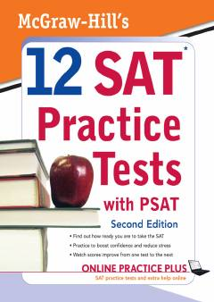

M1SAT va PSAT imtihonlari uchun amaliy testlar va javoblar to'plami.
Ushbu kitob o'quvchilarga SAT va PSAT imtihonlariga tayyorgarlik ko'rishda yordam berish uchun mo'ljallangan amaliy testlar to'plamini o'z ichiga oladi. Nashr mualliflar Christopher Black va Mark Anestis tomonidan tuzilgan bo'lib, imtihon formatiga mos tushuvchi savollar va javoblarni taqdim etadi. Kitob talabalarga o'z bilimlarini sinovdan o'tkazish va imtihon ko'nikmalarini oshirish imkonini beradi.